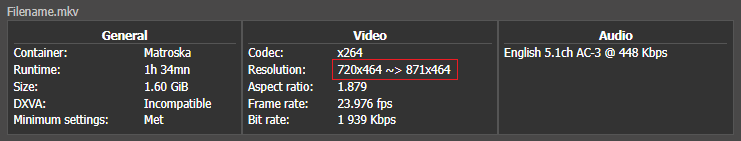

Anamorphic Files: Storage Resolution vs Display Resolution
Note
This section is only relevant for files with anamorphic resolution. It is primarily found in rips from DVD, VHS and TV. Some lower quality Blu-ray content, especially Extras, are also anamorphically encoded.
What are anamorphic files?#
Anamorphic files are encoded (or stored) at a different resolution than what they are displayed in. The resolution at which such a file is stored is called the Storage Resolution, and the resolution at which it is displayed is called the Display Resolution. For example, a file may be encoded at 720x480 resolution, but at the time of playback, it's scaled to 853x480 by your media player or device.
For our purposes, the screenshots need to be taken at the Display Resolution. Screenshots taken at Storage Resolution will appear to be Bad Aspect Ratio. They will look shrunk or stretched, and will not represent what the video actually looks like to someone watching the film.
Example of screenshot taken at storage vs display resolution:
How to tell if a file is anamorphic:#
-
The easiest way is to look at the mediainfo summary on site. Whenever the Resolution field shows two values, one after the other, the file is anamorphic. The resolutions are in the form
Storage RES ~> Display RES.- 
- The screenshots must be taken in the second resolution, i.e. Display Resolution. However, for many files, the screenshots will not match the Display Resolution exactly. There can be a discrepancy of 10 or 20 pixels between the screenshots and the Display Resolution shown in the summary. This is normal, and it happens because the
Display aspect ratioin mediainfo is an approximation instead of being an exact value. For example, mediainfo may round an AR of 1.834:1 to 1.85:1.
- The second way is through the Advanced mode in mediainfo. There are two ways to take Advanced mediainfo of a file.
- CLI:
mediainfo -f file.mkv > output.txt - GUI: Load the file in the mediainfo application. First, go to
Viewin menu bar and ensure that theTextview is selected. Then click onDebugand thenAdvanced mode. See this screenshot if you need help finding it. - For illustration purposes, a sample file of resolution 718x436 was chosen. The relevant part we want from the Advanced mediainfo is:
Pixel aspect ratio : 1.422 Display aspect ratio : 2.342 Display aspect ratio : 2.35:1-
1.1 Using PAR:#
Files that are NOT anamorphic will have aPixel aspect ratio(PAR) of exactly 1.000. You can use the PAR to find out what the Display Resolution should be. Just multiply the width of the file with the PAR value. So since the file's storage resolution is 718x436, the display width will be \(718 \times 1.422\) which equals \(1021\). Therefore, your screenshots will come out approximately 1021x436. -
1.2 Using PAR (alternate method):#
Some media players might display this file at an alternate display resolution, where instead of the width being multiplied, the height gets divided by the PAR. In the above example, the calculation becomes \(436 \div 1.422 = {\sim}307\). Therefore, the alternate display resolution of this file will be 718x307. Once again, this gives a similar Display aspect ratio: \(718 \div 307 = 2.339\). You can think of this alternate resolution as the video being downscaled instead of upscaled when rescaling the video from the storage resolution to the display resolution. Another way of visualizing this is: To rescale such a file, you can either stretch it horizontally or shrink it vertically. Stretching it horizontally is the usual way, while shrinking it vertically is the alternate way. -
1.3 Using DAR:#
Instead of using PAR, take the preciseDisplay aspect ratiofrom the Advanced mediainfo and multiply the height with it. This is in contrast to using the PAR, where we multiplied the width instead of the height. So, for the above example of a 718x436 file, the resulting width becomes \(436 \times 2.342 = 1021\), which is the same width we got using the PAR method. However, I do not prefer this method, simply because it is easier to spot an anamorphic file using the Pixel aspect ratio. If PAR is NOT 1.000, it is anamorphic.
-
{kind=link}
graph TD;
A["<b>Encode at storage resolution</b> <br /> <i>Dimensions:</i> 718x436 <br /> <i>PAR:</i> 1.422 <br /> <i>DAR:</i> 2.342 <br /> <i>SAR:</i> 1.647"];
A -->|"Method 1.1 (Using PAR)"| B["<b>Multiply the width with the PAR.</b> <br /> <u>Calculation:</u> 718 × 1.422 = 1021 <br /> <u>Result:</u> 1021x436 <br /> <u>AR:</u> 2.3417"];
A -->|"Method 1.2 (Using PAR - Alt.)"| C["<b>Divide the height with the PAR.</b> <br /> <u>Calculation:</u> 436 ÷ 1.422 = 307 <br /> <u>Result:</u> 718x307 <br /> <u>AR:</u> 2.3387"];
A -->|"Method 1.3 (Using DAR)"| D["<b>Multiply the height with the DAR.</b> <br /> <u>Calculation:</u> 436 × 2.342 = 1021 <br /> <u>Result:</u> 1021x436 <br /> <u>AR:</u> 2.342"];Correlation between SAR, DAR and PAR:
This part is not directly relevant to taking screenshots, but it is being mentioned for the curious.
- Pay attention to the correlation between the display resolution of 1021x436 we got above and the first
Display aspect ratio(DAR) in the Advanced mediainfo above: \(1021 \div 436 = {\sim}2.342\), which matches the first Display aspect ratio in the Advanced mediainfo. That first value is more precise, while the second one is a rounded value. The precise value is only shown in the Advanced mediainfo. - A commonly known equation is
DAR = SAR × PAR. The acronymsDARandPARhave already been referenced above.SARrefers to theStorage aspect ratio. Simply put, it is the ratio of the (storage) width to the (storage) height.- For the sample file we chose above, its SAR is \(718 \div 436 = {\sim}1.647\).
- Its PAR is already known to be 1.422.
- Therefore, its DAR = \(1.647 \times 1.422\) which equals \(2.342\), which in turn, matches the value in the Advanced mediainfo.